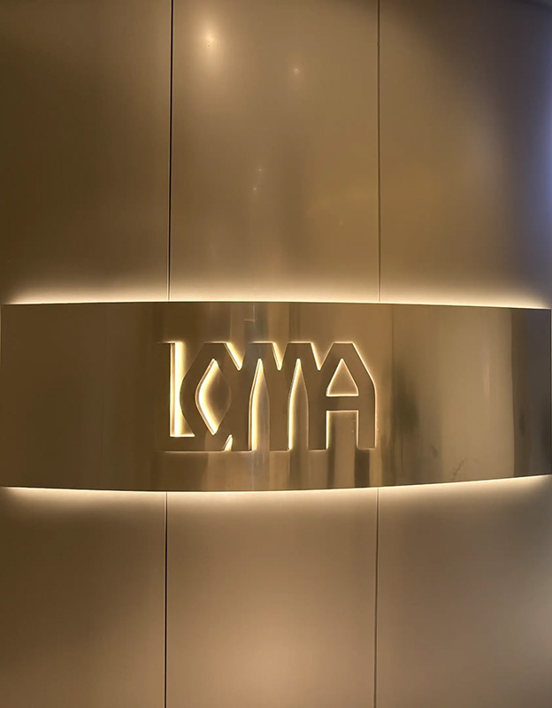
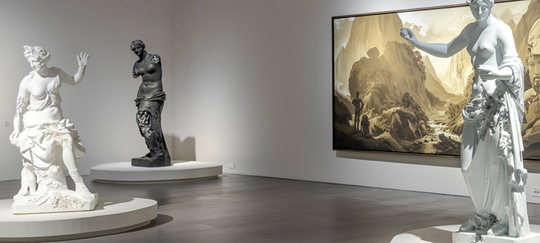
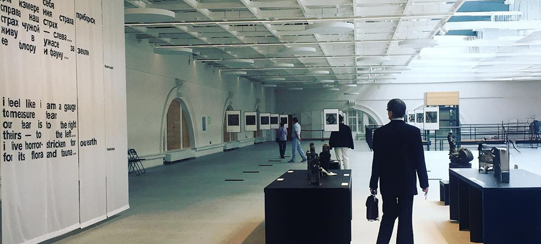
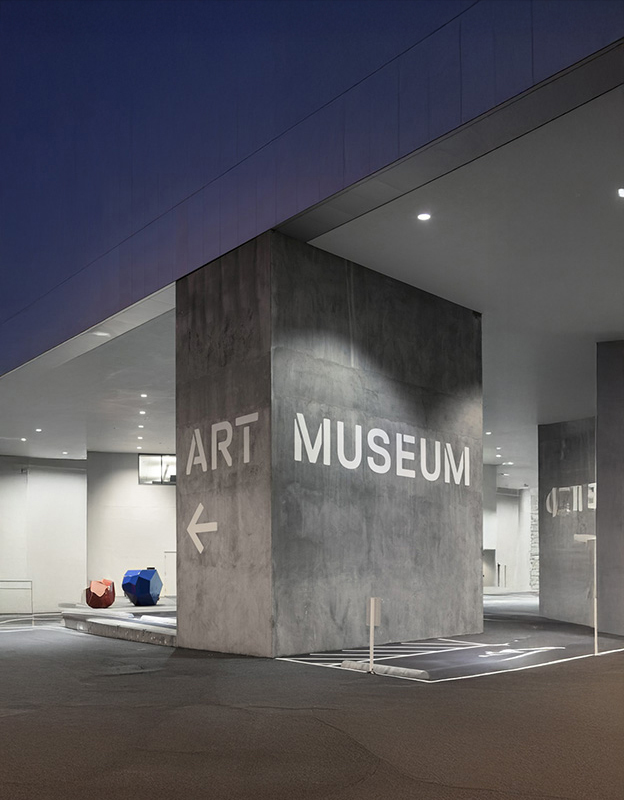
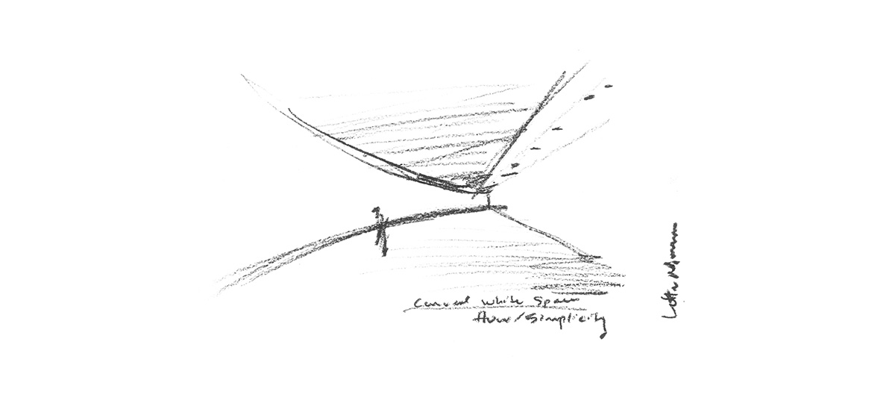

문화 융합의 중심, 세상을 보는 새로운 가치 롯데뮤지엄
-

- ABOUT LOTTE MUSEUM
- 역동적인 세계 현대미술을 공유하는 컨템포러리 미술관
- 예술은 사회, 정치, 문화, 역사, 젠더의 경계를 허물고 서로의 다양성을 증폭시키며 삶을 풍요롭고 행복하게 하는 최상의 가치입니다.
- 세계에서 다섯 번째로 높은 롯데월드타워에 들어서는 유일한 예술 공간으로 롯데뮤지엄이 탄생했습니다. 한국적 곡선의 아름다움을 표현한 롯데월드타워 외관과 어우러지도록 전시장 내부도 우아한 곡면을 살려 디자인했습니다. 더불어 유연한 곡선은 시간과 공간을 초월한 예술 작품을 이어주어 모두에게 새로운 관람 경험을 선사합니다.
-

- ART 예술
- 한국적 곡선의 아름다움을 표현한 롯데월드타워 외관과 어우러지도록 전시장 내부도 우아한 곡면을 살려 디자인했습니다.
- 더불어 유연한 곡선은 시간과 공간을 초월한 예술 작품을 이어주어 모두에게 새로운 관람 경험을 선사합니다.
-

- PLEX 복합문화공간
- 롯데월드타워는 기본적인 의식주를 넘어서 다양한 문화를 경험할 수 있는 복합문화공간으로, 항상 여러분을 맞이 할 준비를 마친 열린 공간으로 여러분의 추억과 기록이 되어 존재하고있습니다.
-

- ARTPLEX 롯데뮤지엄
- 역동적인 세계 현대미술을 공유하는 컨템포러리 미술관입니다.
- 롯데뮤지엄은 평범했던 일상을 넘어서 예술로 만들어주는 그 순간이 시작되는 곳입니다.
- 최선을 다하여 창의적인 공간과 수준 높은 예술을 제공하여 문화예술에 대한 여러분의 열정에 맞춰 나아가도록 항상 노력하는 공간이 되겠습니다.
Curved White Space
롯데뮤지엄만의 특별한 공간을 소개합니다.
- 도심 한가운데 펼쳐지는 생동감 넘치는 시각예술의 향연을 통해 롯데뮤지엄은 서울의 예술적 위상을 보여주는 새로운 문화 랜드마크로 쇼핑에서 미식, 엔터테인먼트까지 아우르는 복합문화공간에 위치해 일상이 예술이 되는 특별한 경험을 선사합니다.
- 롯데뮤지엄은 수준 높은 전시를 통해 예술이라는 언어로 전하는 삶의 정수, 그 창조적 에너지가 주는 빛나는 영감을 서로 나누는 미술관으로 자리매김 할 것 입니다.